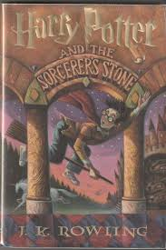
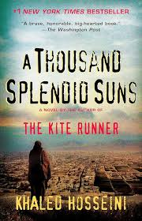

Welcome to JavaGen2025
Welcome to my course website. This site is about my favorite books and why they are meaningful to me.
My Favorite Books
- Harry Potter
- Dune
- A Thousand Splendid Suns
Favorite Book Covers



Image sources: Book cover images from Google (Dune by Frank Herbert, Harry Potter by J.K. Rowling, and A Thousand Splendid Suns by Khaled Hosseini).
Book Information
| Book | Author | Year |
|---|---|---|
| Harry Potter | J.K. Rowling | 1997 |
| Dune | Frank Herbert | 1965 |
| A Thousand Splendid Suns | Khaled Hosseini | 2007 |
Project 2 - HTML Reflections
I moved from Puerto Rico to the continental United States when I was around 9 or 10 years old. It was a big transition, and like many kids I just wanted to fit in. Around that time, everyone seemed to be reading Harry Potter, so I picked it up too. What started as an attempt to belong turned into a life long love for the world Harry Potter had to offer. For me it represented new beginning, a world where change could lead to something magical. Of the series, my favorite book is the Sorcers Stone because it introduces you to the world of Harry Potter.
I didn’t discover Dune until later in life. After watching the movie, I was curious enough to give the book a chance. At first, it felt slow and a bit overwhelming, but as I kept reading, I found myself drawn into its depth and complexity. By the end, it was incredibly rewarding and left a lasting impression on me.
During my deployment to Afghanistan around 2014, I read A Thousand Splendid Suns. That experience made the story hit even harder. It gave me a powerful and personal perspective on the struggles and resilience of women in Afghanistan, deepening my understanding in a way I hadn’t experienced before.